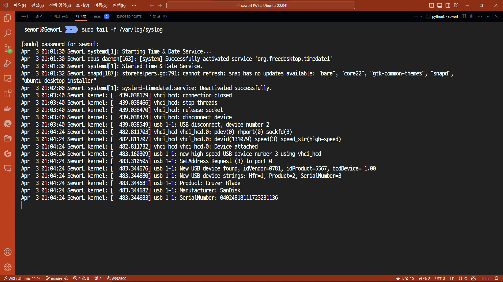
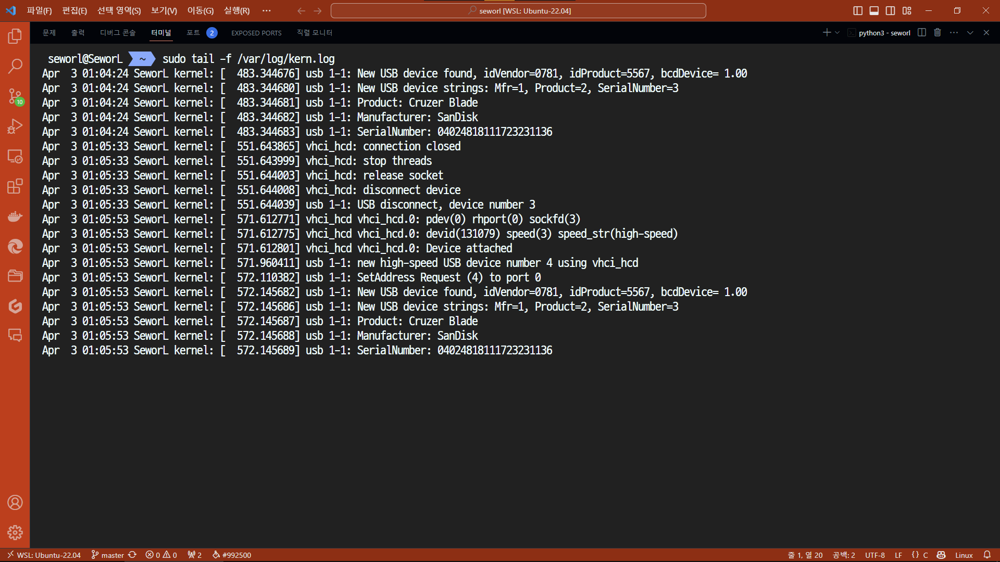
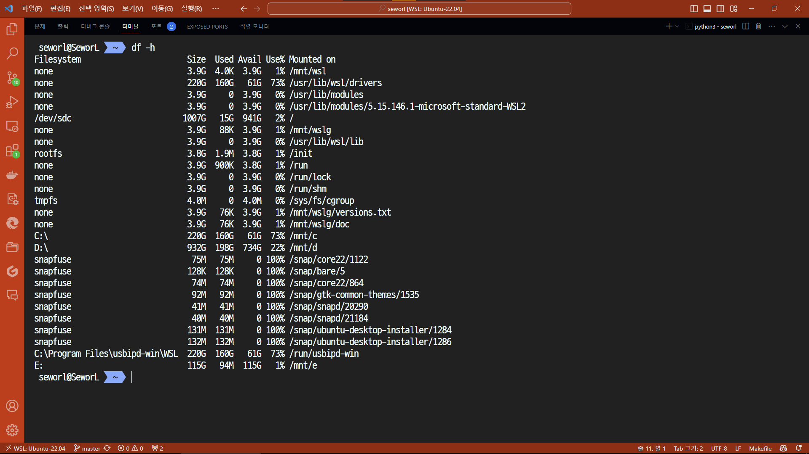
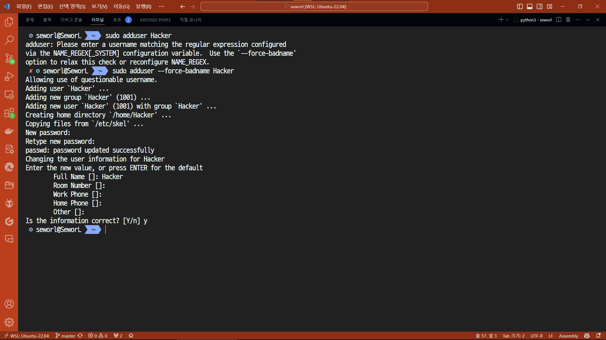
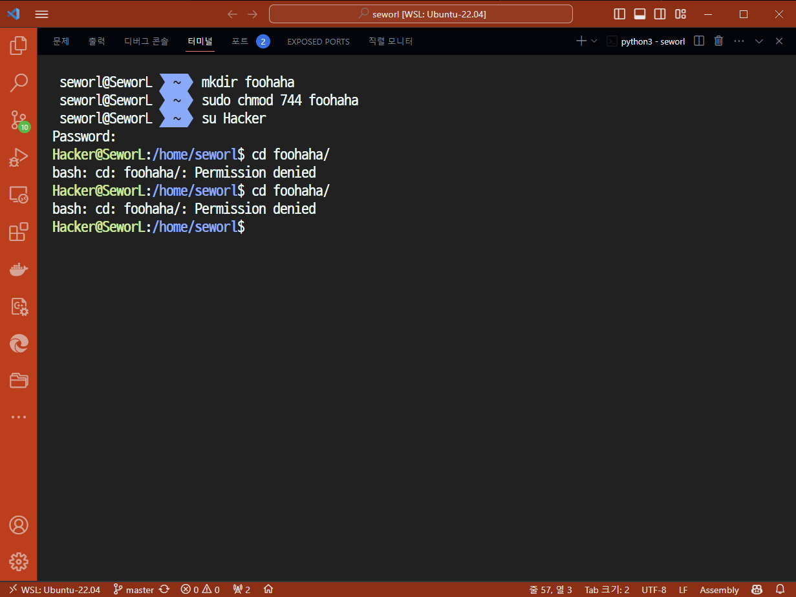
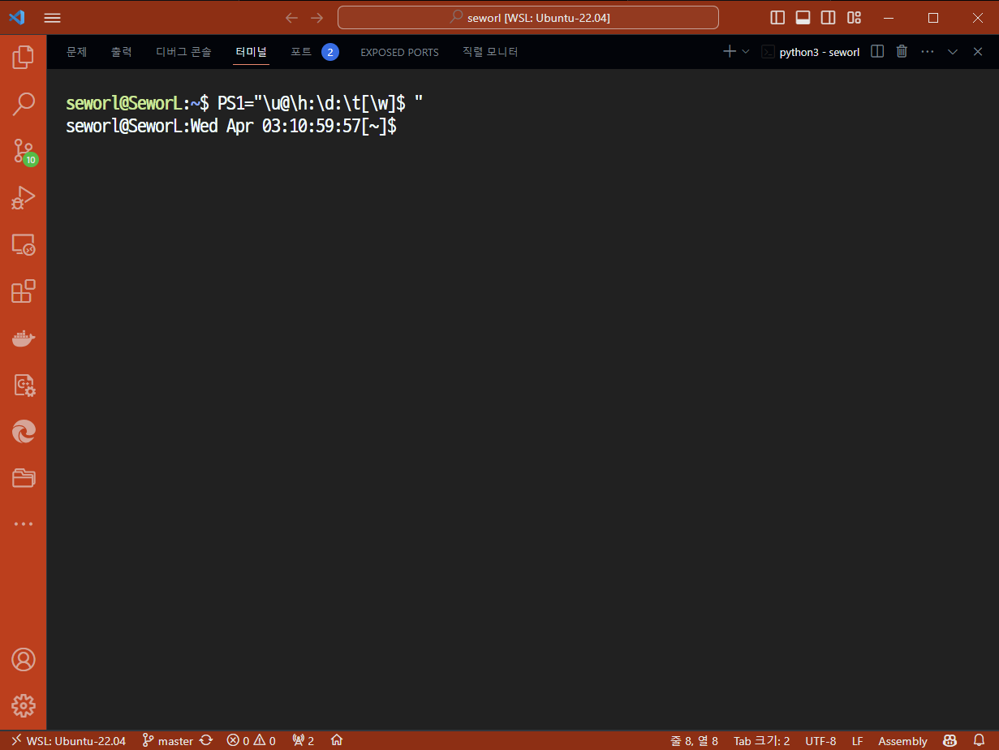

School ID: 202355517 Name: 권민규
tail -f .... command우분투에서 usb 연결 시 이하의 파일 두 곳에 로그가 남는다고 한다.
/var/log/syslog/var/log/kern.logsudo tail -f /var/log/syslog
해당 명령어를 작동시켜놓은 채 USB를 연결하면 다음과 같은 로그가 남는다.

sudo tail -f /var/log/kern.log

본인은 wsl을 사용하기 때문에 USB를 연결하기 위해서 추가적인 작업을 해야할 필요가 있다.
usbipd-win을 설치해 usb 드라이브와 wsl을 연결해야 하나, 이번 과제에서는 생략한다.
u mount to unmount your USB memory file system on your Linux box - explain this procedure stepdf -h 명령어를 통해 마운트된 디바이스의 경로를 확인한다.
df -h

현재 /mnt/e에 마운트되어 있는 것을 확인할 수 있다. 이를 umount 명령어를 통해 언마운트한다.
sudo umount /mnt/e
언마운트 이후에는 df -h 명령어를 통해 마운트된 디바이스가 없는 것을 확인할 수 있다.
유저를 생성하기 위해 adduser 명령어를 사용한다.
기본적으로 유저 이름은 소문자로만 가능한데, --force-badname 옵션을 사용하면 대문자도 가능하다.
sudo adduser --force-badname Hacker
패스워드는 powerhacker로 설정했다.
풀네임은 Hacker로 설정했다.

sudo chmod 700 ~ 명령어를 통해 홈 디렉토리의 권한을 변경한다.
sudo chmod 700 ~
이후 Hacker 계정으로 접속해 접근을 시도한다.
su Hacker
cd ~

퍼미션이 거부되었다는 것을 확인할 수 있다.
foohaha. Change permission mode into drw-r--r--. What happend if you try to access the foohaha directory?mkdir 명령어를 통해 foohaha 디렉토리를 생성한다.
mkdir foohaha
drw-r--r--은 744로 표현할 수 있다. chmod 명령어를 통해 권한을 변경한다.
sudo chmod 744 foohaha

eXecute 권한이 없기 때문에 디렉토리에 접근할 수 없다.
다만 Read 권한이 있기 때문에 ls 명령어를 통해 디렉토리 내부를 확인할 수는 있다.
userID@hostName:date:time[the current working direcotry]$아래 명령어를 사용한다.
PS1="\u@\h:\d:\t[\w]$ "
프롬프트를 표시하는 변수인 PS1에 값을 할당한다.
\u는 유저 이름, \h는 호스트 이름, \d는 날짜, \t는 시간, \w는 현재 작업 디렉토리를 나타낸다.

영구적으로 변경하려면 해당 명령어를 ~/.bashrc 파일에 추가하면 된다.